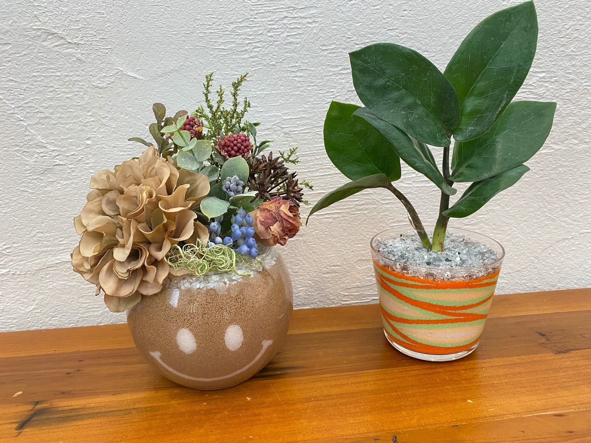
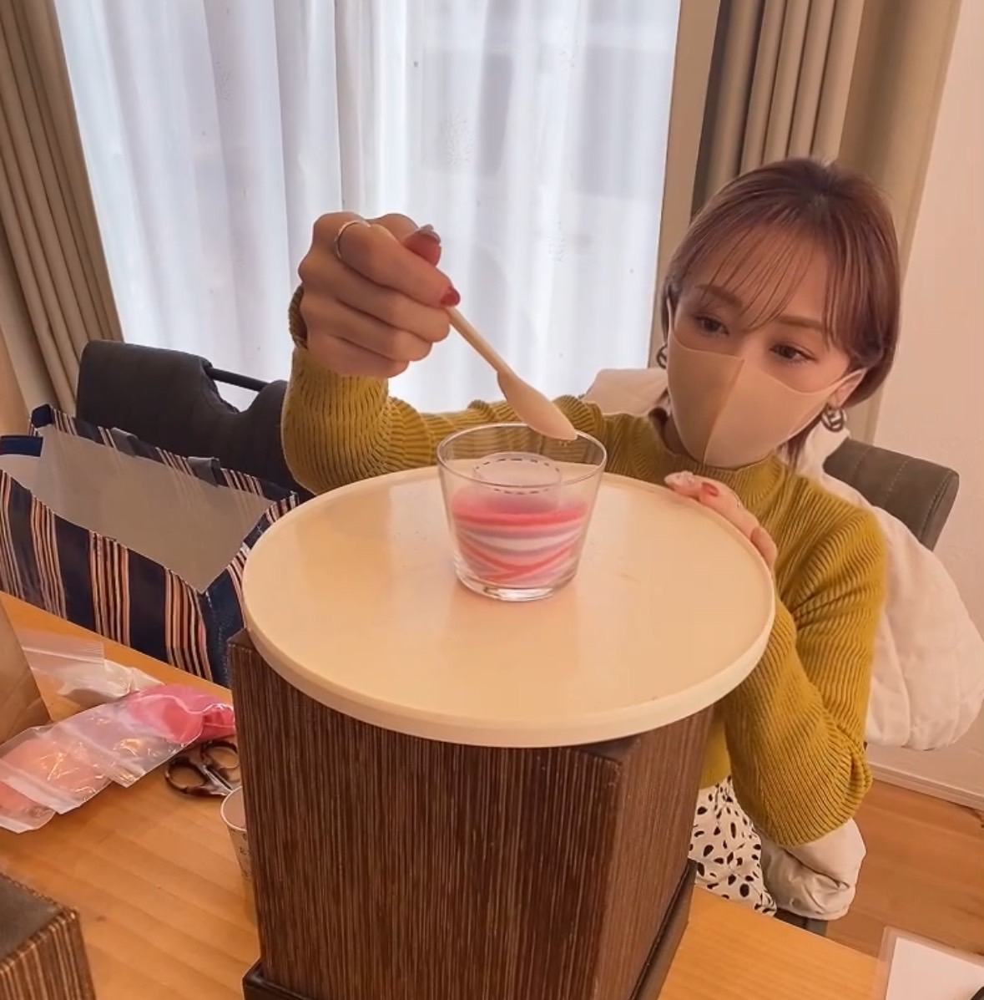
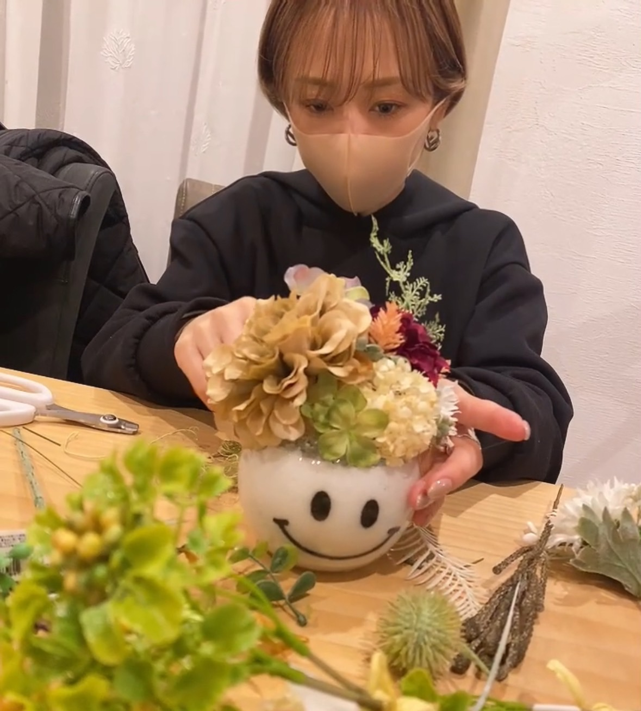
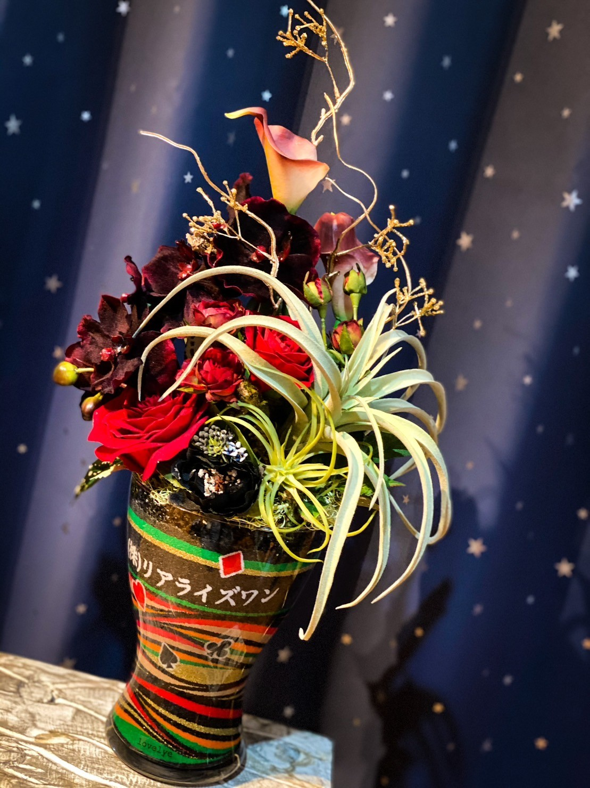
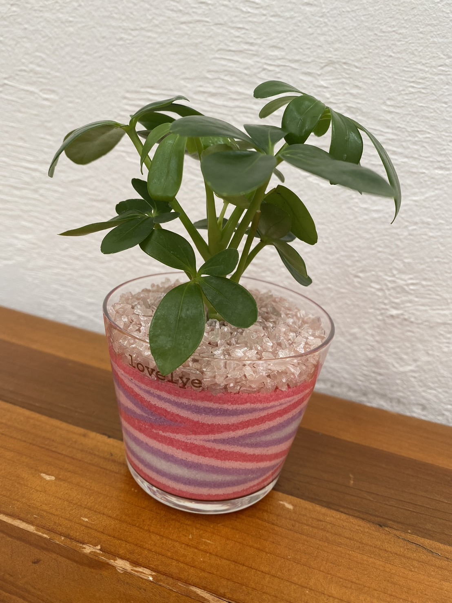
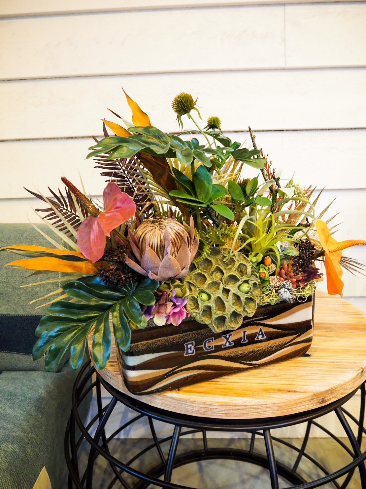
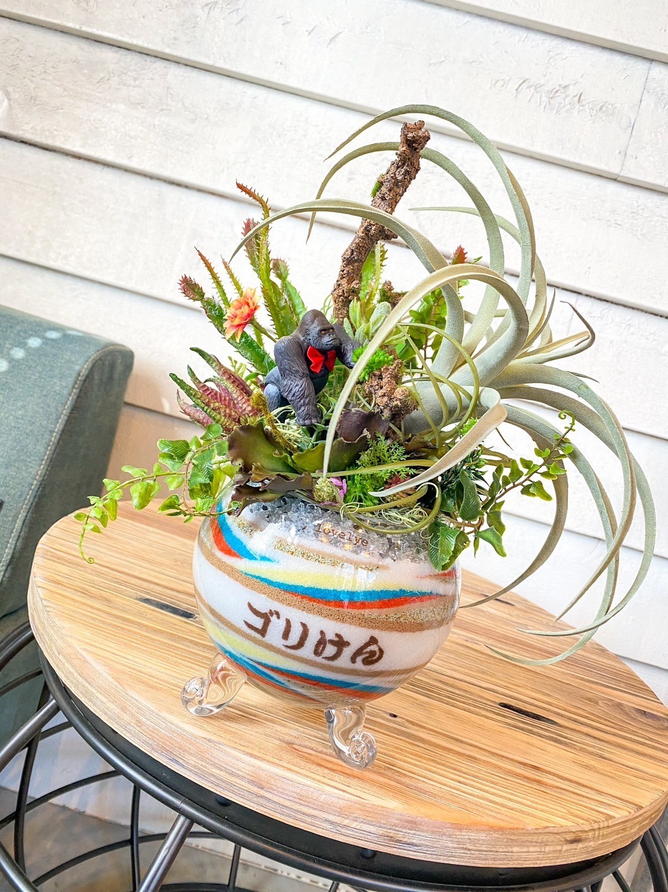

初心者の方でも安心。当協会のレッスンは【ただ作る】だけではなく、【あなたらしさ】を知って どうやって販売を展開していくかを講師と一緒に考えていきます。趣味からスタートされる方も沢山いらっしゃいます。
「サンドアート作りって難しそう…」「アフターフォローはどこまで？」「対面の方がいいのでは…」— そんな不安はありませんか？
みなさんはハンドメイドの習い事で資格を取得したものの、その資格を活かせていますか？【資格取得後、講師とのコミュニケーションは取れてますか⁇】ここが重要だと思っています。当協会はアフターフォローには自信があります！受講生のご家族も応援してくれるように、講師も全力で向き合います。
アース系のカラーやドライフラワーに合う色は、既存のお砂では作品の表現がワンパターンになって難しいんです。カラーサンドアーティスト協会ではエレガント・ナチュラル・ガーリー・モダン系のカラーも取り揃えています。作品の雰囲気も変わり、お客様に満足していただける作品作りができるんです。
【仲間の応援を心から応援できる】人達と繋がっていくと、講師以外からのアドバイスが聞けたり情報交換ができて、お互い刺激になって毎日が楽しくなります。ライバルではなく同志ですね!! 不定期で卒業生対象のオンライン無料交流会も開催しています。
出張 or 福岡／糸島市内にて。講師と直接、技術を学べます。
オンライン上にて対面と同じレッスン。全国どこからでも受講可能です。
技術は対面、座学はオンライン。柔軟に組み合わせられます。

Artistレッスン時間以外でも、練習した作品などやご質問はLINEにてアドバイスしております。





砂好きな方々と交流ができて、新しい出会いが嬉しかった！同じぐらいに始めた方と連絡をとって励まし合えた！資格ちょっと高いかなーと思っていたけど、アフターフォローがしっかりしていたから、受講後は納得できた！オーダーしてくれたお客様と、それを受け取ったお客様が感動してもらえることが嬉しい。
対面レッスン ・ 福岡 S様カラーサンドアートでも色んな協会がある中どこで受講するか迷っていましたが、理事の先生からのすごく丁寧なお返事にすぐにここにしようと思えました！どれも繊細で素敵な作品と知識でとても勉強になりました。どの先生も本当に親身になってくださり、受講後も安心して活動していけると心から思えます。
対面レッスン ・ 大阪 T様座学だけだと不器用で大雑把な私に出来るか不安でしたが、いざやってみて形ができてくると嬉しさと自信に繋がり、子育て中の癒しやストレス発散になりました‼️ まだまだ練習が必要ですが喜んで貰える作品を作り続けたいと思います!! 担当講師にも恵まれて、さらにお砂の世界にのめり込みそうです。
対面レッスン ・ 福岡 M様LINEまたはDMよりお申し込みください。担当講師より2日以内に返信があります。
レッスン前にレッスン料のお支払いをお願いいたします。
サンドアーティストに向けてレッスンを開始します。
受講のお申し込み・ご相談は、LINEまたはDMより承っております。
担当講師より2日以内にご返信いたします。